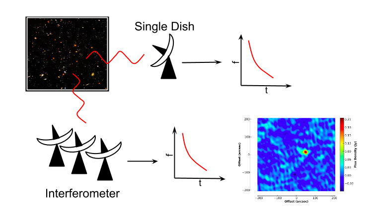
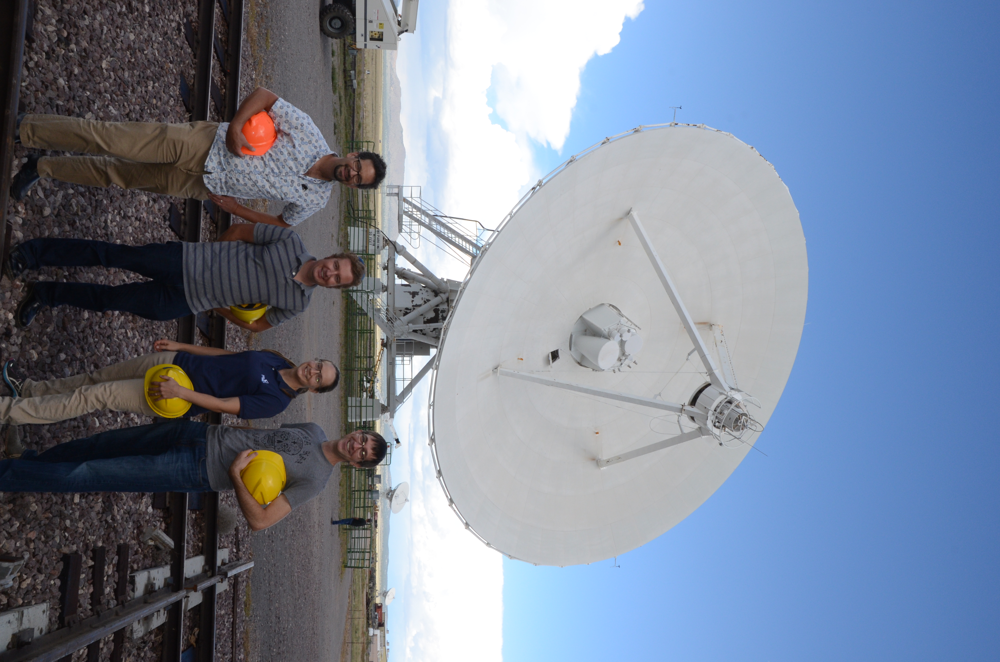

realfast: A system for real-time, commensal fast transient searches at the Very Large Array
Context
Fast radio transients (e.g., pulsars) have a rich scientific legacy and promise to be central to many new and exciting problems in physics. As the most sensitive cm-wavelength radio interferometer on earth, the VLA will revolutionize this field with its ability to localize sources with arcsecond spatial resolution. For example, interferometric imaging will do pioneering science with a mysterious new class of radio transients known as fast radio bursts. Arcsecond localization will help identify unique multiwavelength counterparts (e.g., host galaxies), to measure the distance to FRBs, answer basic questions about their origin, and use them as novel probes of the intergalactic medium. Similarly, the interferometric discovery and localization of other classes of millisecond transient will address topics ranging from the missing baryon problem to (sub)stellar magnetism to the search for exotic binary pulsar systems.
The challenge to using the VLA for millisecond imaging is that it produces roughly 1 TB of data per hour and requires forming many thousands of images per second. This data rate is so large that it cannot be transferred via the internet for data analysis. The computing requirements are so severe that no single computer can manage the search. The question is: how can we manage a TB/hour data stream to find a millisecond transient in hudreds of hours of data?
Our answer isrealfast, a system for real-time fast transient searches at the VLA. Real-time processing is critical, as it allows triggered data recording and opens access to "commensal" observing in conjunction with other VLA observations. realfast is supported by the NSF ATI program starting in late 2016.
Approach
realfast is built from a few key technologies:
- Computing hardware at the VLA: Computing is the most significant missing component to the creation of a real-time, commensal VLA fast transient detection system. This proposal will support the purchase of servers, GPUs, and infrastructure to be dedicated to realfast.
- Commensal data stream: The commensal data stream is a high-speed duplicate of the primary observing stream.
- Transient search pipeline: The new hardware will run a transient search pipeline. Currently that pipeline has been demonstrated with CPUs, but ultimately it will be migrated to GPUs.
- Candidate data management system:
realfastwill serve data products and transient alerts to the public. Initially, team members will classify each candidate (e.g., candidate summary plot), but ultimately we will train a statistical classifier to automatically identify good candidates.
Team

- Geoff Bower (ASIAA)
- Sarah Burke-Spolaor (UWV)
- Bryan Butler (NRAO; NRAO lead)
- Paul Demorest (NRAO)
- Shakeh Khudikyan (JPL)
- Casey Law (UC Berkeley; Principle Investigator)
- Joe Lazio (JPL)
- Martin Pokorny (NRAO)
- James Robnett (NRAO)
- Michael Rupen (DRAO)
Software
The core software for the fast transient search is rtpipe. We demonstrated the search pipeline in a 200-hour, 200-TB VLA imaging survey for FRBs. We have also used it to make the first blind interferometric localization of a transient neutron star.
rtpipe was built as an open tool to support analysis of interferometric data for fast transients. For more information, see this blog post. You can also launch an interactive Jupyter notebook with rtpipe pre-installed by visiting the github repo.